Video Mosaic
01
Moving video mosaic maker
BROWSER PREVIEW / Windows + WebVideo Mosaic is a video mosaic maker that turns a photograph into a larger moving composition built from individually animated video clips and tiles.
Explore machine ⟶
Audio/Visual Instruments
and Experiments
The collection / Original instruments
Playable systems for sound, motion, and strange interaction.
Moving video mosaic maker
BROWSER PREVIEW / Windows + WebVideo Mosaic is a video mosaic maker that turns a photograph into a larger moving composition built from individually animated video clips and tiles.
Explore machine ⟶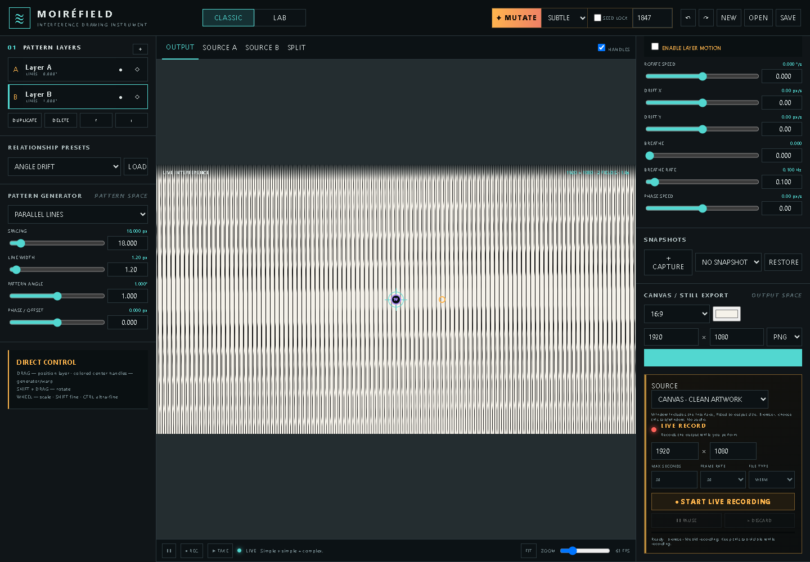
Optical interference drawing instrument
STUDIO INSTRUMENT / Windows + WebMoiréField is an interactive animated moiré pattern generator for creating optical interference, layered geometric patterns and evolving moiré effects directly in the browser.
Explore machine ⟶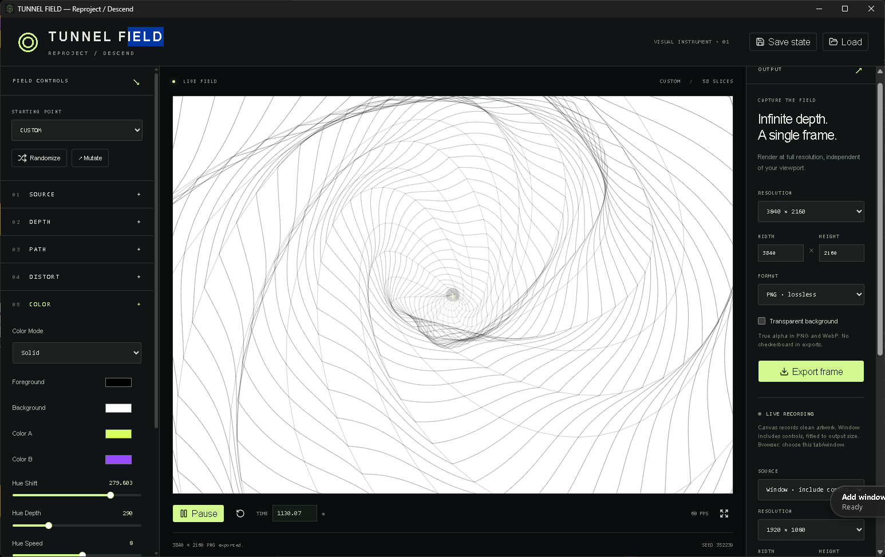
Generative visual instrument
STUDIO INSTRUMENT / Windows + WebTunnelField is an animated tunnel generator for creating evolving geometric tunnels, optical depth effects, psychedelic motion and experimental generative visuals.
Explore machine ⟶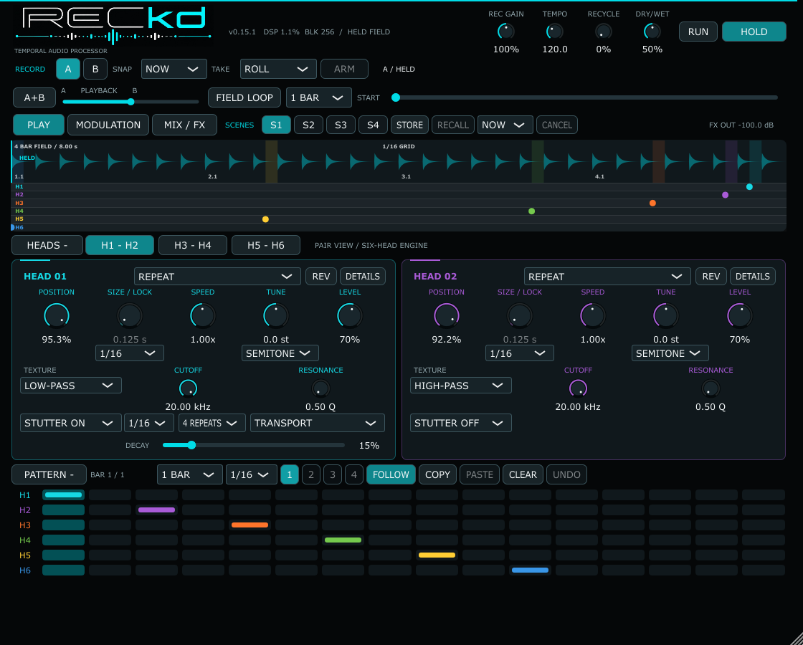
Temporal instrument
0.15.1 · BETA / Windows x64 · VST3Record a four-bar field. Reshape it with six playback heads.
Explore machine ⟶
Live time bender
IN DEVELOPMENT / WindowsBend live audio with stretch, pitch, freeze and reverse controls.
Explore machine ⟶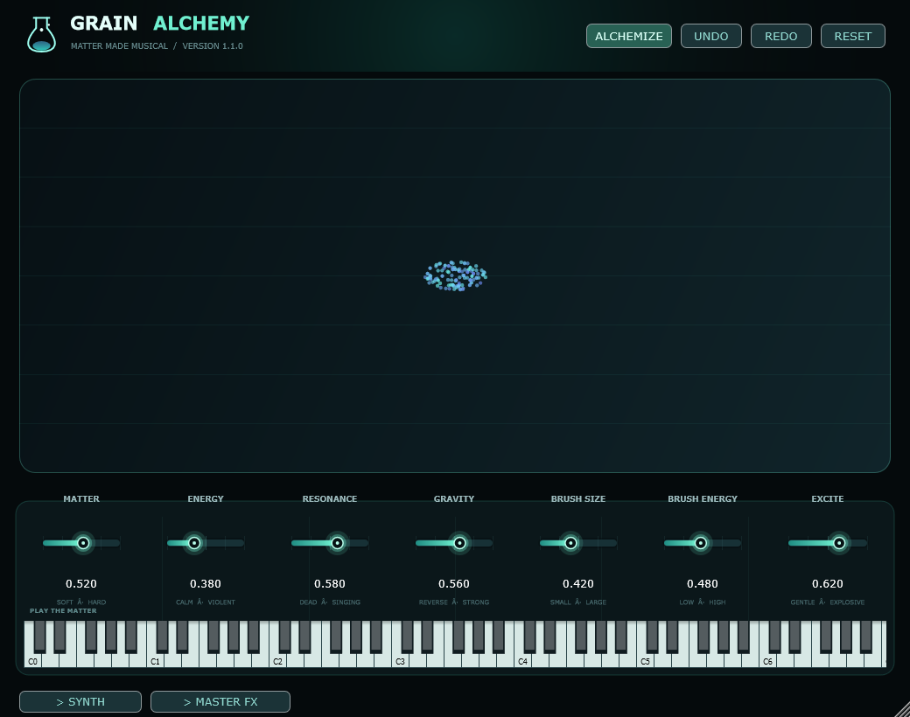
Interactive synthesis instrument
IN DEVELOPMENT / WindowsMatter made musical. Explore energy, resonance, gravity and sound.
Explore machine ⟶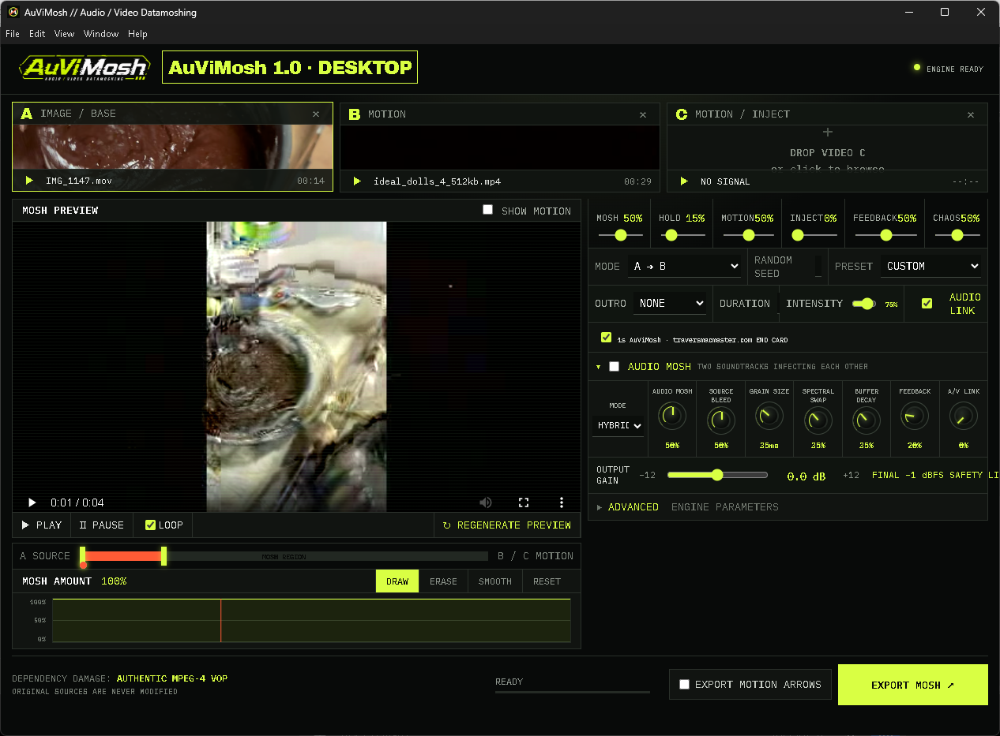
Audio / video mosh instrument
1.0 · WEB LIVE / Web + WindowsAuViMosh is a browser-based datamosh and glitch video editor for transforming video through motion, compression artifacts, visual analysis and experimental image processing.
Explore machine ⟶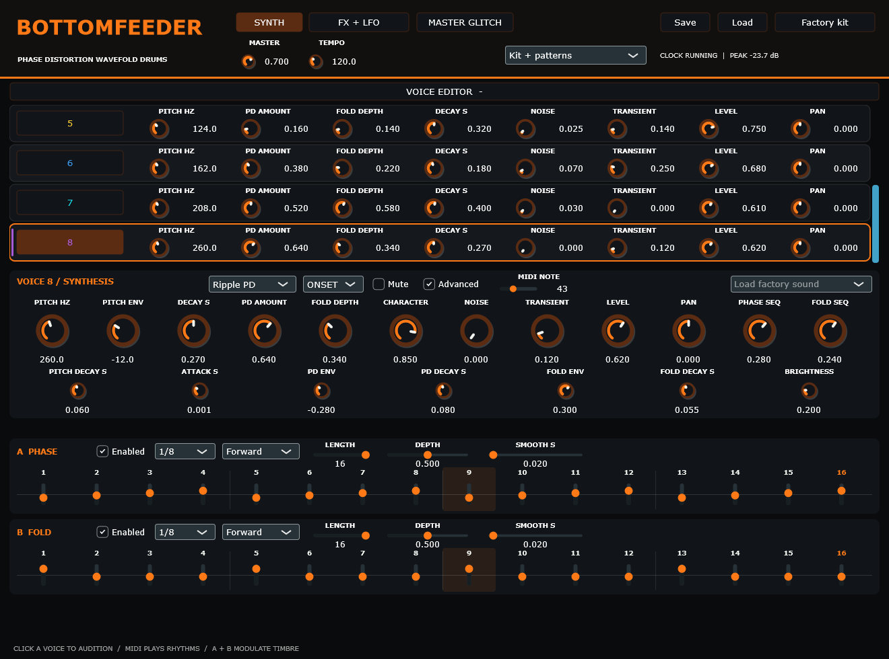
Phase distortion wavefold drums
IN DEVELOPMENT / WindowsEight drum voices. Phase distortion, wavefolding and master glitch effects.
Explore machine ⟶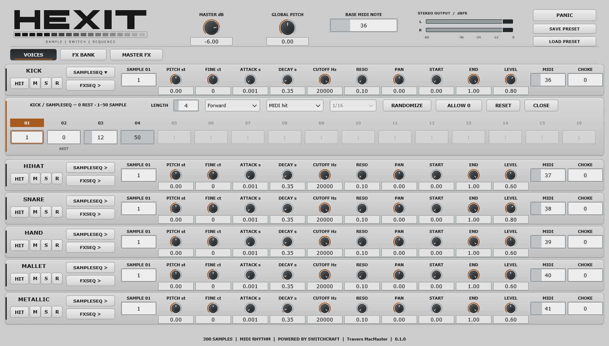
Sample switching rhythm instrument
IN DEVELOPMENT / WindowsSample. Switch. Sequence. Six voices with sample and FX sequencing.
Explore machine ⟶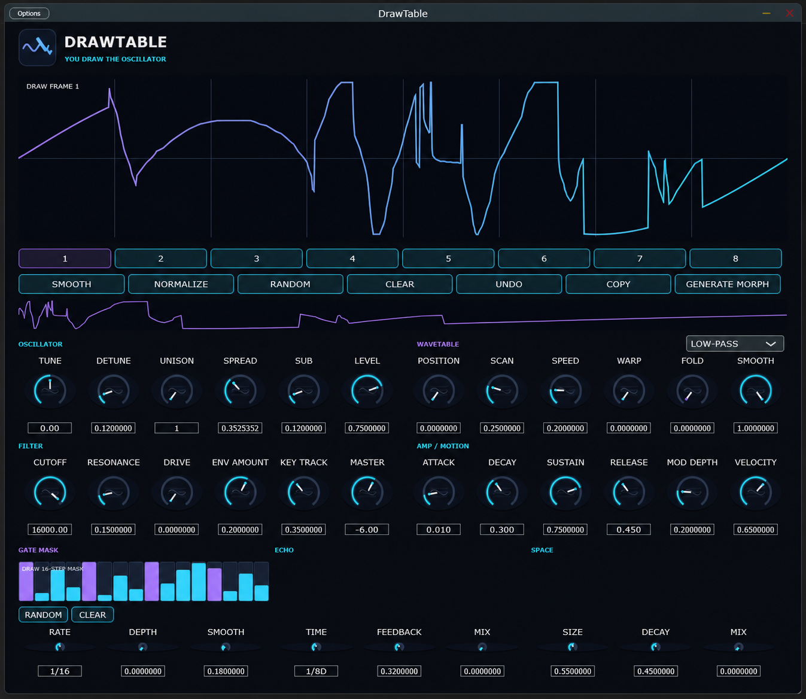
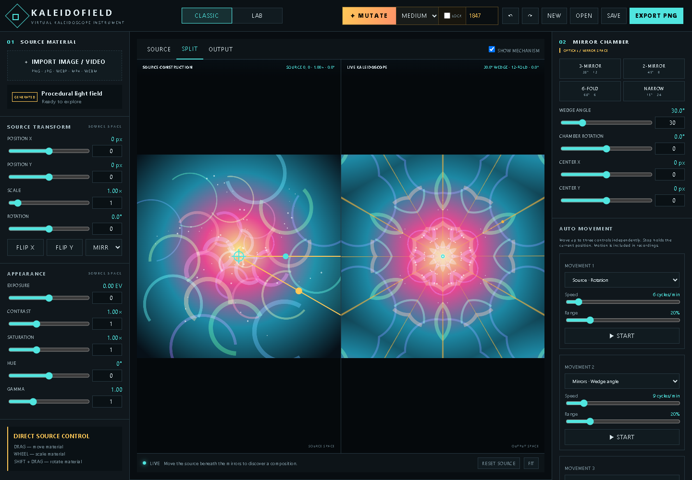
Kaleidoscope image and video maker
BROWSER PREVIEW / Windows + WebKaleidoField is an interactive video and image kaleidoscope generator for transforming visual media into animated radial patterns, symmetry and experimental kaleidoscopic art.
Explore machine ⟶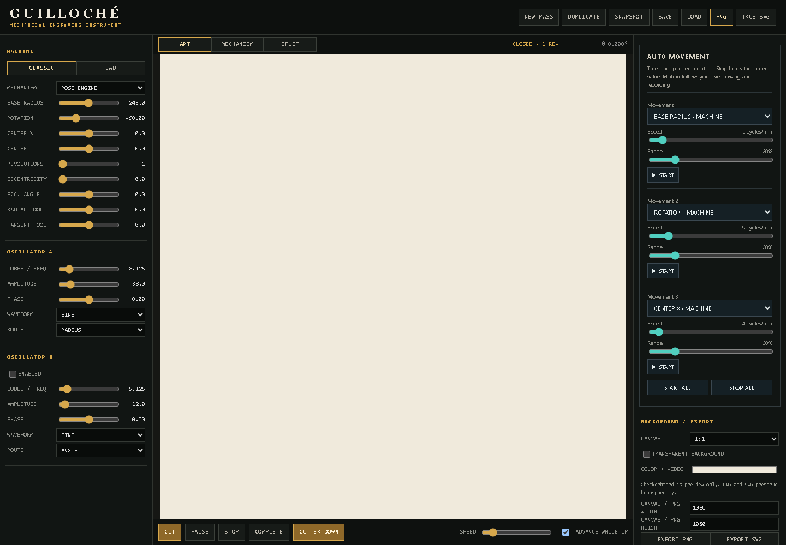
Geometric engraving instrument
BROWSER PREVIEW / Windows + WebGuilloché is an interactive guilloché pattern generator for creating intricate mathematical curves, geometric line art and layered ornamental patterns in the browser.
Explore machine ⟶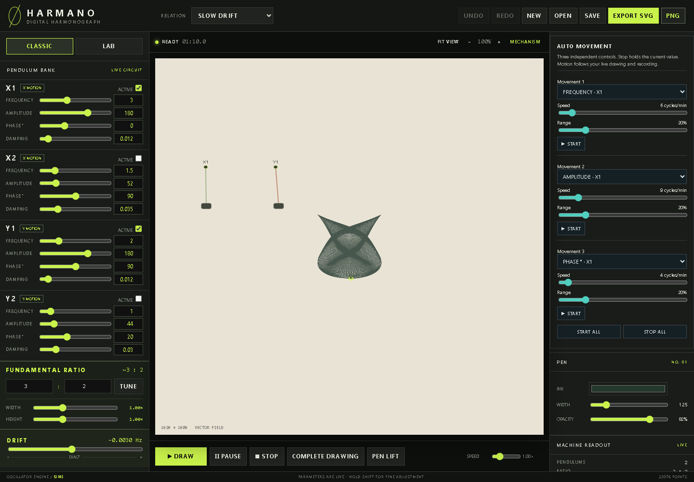
Digital harmonograph
BROWSER PREVIEW / Windows + WebHarmano is an animated harmonograph art generator for creating pendulum-inspired mathematical drawings, evolving line patterns and geometric generative art.
Explore machine ⟶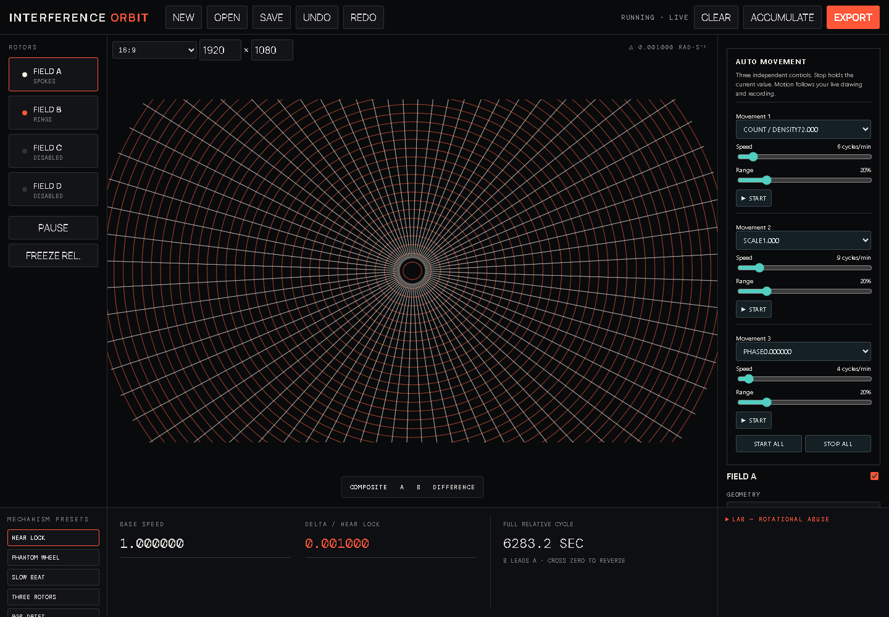
Rotational interference instrument
BROWSER PREVIEW / Windows + WebInterference Field is an animated interference pattern generator for exploring overlapping waves, optical interference, geometric interactions and evolving generative patterns.
Explore machine ⟶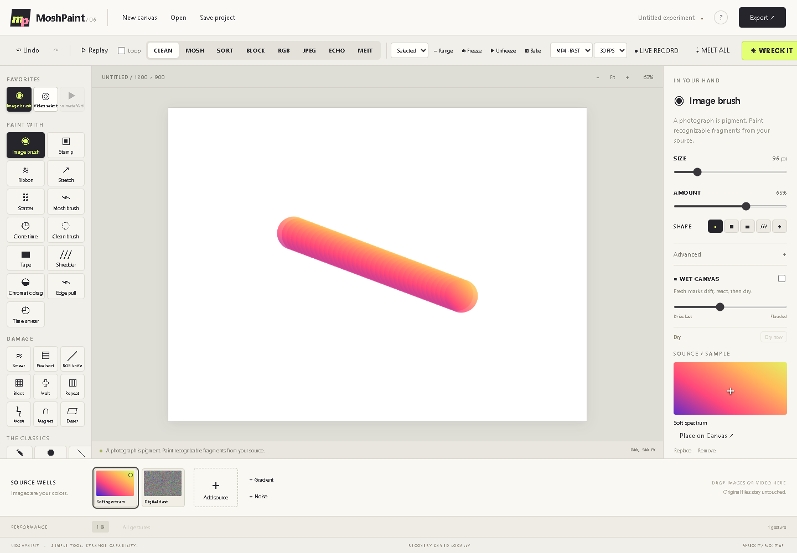
Glitch painting instrument
ALPHA · WINDOWS / WindowsMoshPaint is a Windows glitch art editor and experimental painting tool for painting, distorting, transforming and animating images and video through unconventional digital processes.
Explore machine ⟶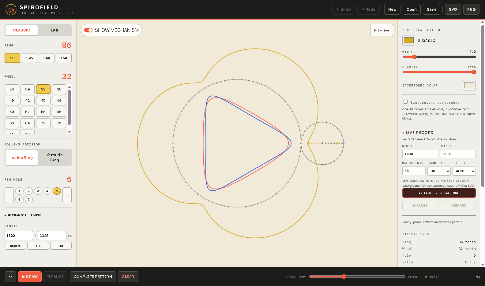
Digital spirograph drawing instrument
BROWSER PREVIEW / Windows + WebSpiroField is an interactive digital spirograph for drawing layered hypotrochoid and epitrochoid curves with tactile ring, wheel and pen-hole controls.
Explore machine ⟶